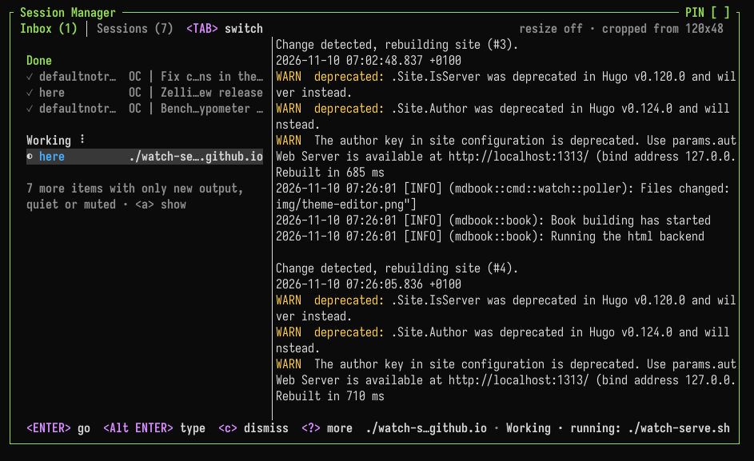

Inbox & Attention
Zellij keeps track of what each pane needs: a program waiting for approval, a command that failed, a long build that finished. These are collected in the inbox, across every running session on the machine.

Many programs report to the inbox with no setup. See Integrations for which ones, and how to connect others.
States
Each pane has one of these states:
| State | Meaning |
|---|---|
| Needs you | The program is waiting for you: approval, a question, a login, a notification or a bell |
| Failed | A command failed |
| Done | A command that ran for a while finished |
| Working | A program or a long command is running |
| Gone quiet | Busy output stopped |
| New output | Output arrived while you were looking elsewhere |
The state is shown:
- As a marker in the pane's frame title (
frame_markers) - As a symbol next to the tab's name in the tab bar (
tab_markers) - In the session indicator on the top-right of the screen, eg.
◉ 2 need you · 1 running, counting every session - In the inbox
- In the Zellij terminal: in the tray icon's badge (
tray_badge) and as desktop notifications (desktop_notifications) - In the outer terminal, when Zellij runs inside a terminal that supports OSC 7501 (
host_status)
Opening the inbox
Ctrl o+i(Session modei, theToggleSessionCardaction). In the Unlock-First preset:Ctrl g+o+i- Clicking the session indicator on the top-right of the screen
- Clicking the tray icon of the Zellij terminal, or running
zellij terminal --inbox
When a new session starts and something needs you, a small version of the inbox (the session card) is shown. This is set with startup_card.
The inbox is part of the session manager. Tab switches between the inbox and the session list.
Keys
| Key | Action |
|---|---|
↓ ↑ | Select an item |
Enter | Go to the pane, switching session if needed |
n | Watch the pane |
m | Mute or unmute the pane |
c | Mark the item as seen |
C | Dismiss everything |
Tab | Switch to the session list |
? | Show all keys |
Esc | Close |
The inbox shows a live view of the selected pane. Clicking the view types into that pane without leaving the inbox. Alt Enter, the inbox key or a click outside the view gives the keys back to the inbox. An extra key for this can be set with the live_view_release_key option.
Where states come from
Zellij picks states up from:
- OSC 7501 program status, sent by programs that report their own state
- Desktop notifications sent by programs (OSC 9, OSC 99 and OSC 777) and the terminal bell
- Shell prompt markers (OSC 133 or OSC 633), which tell when a command at the prompt finished and with which exit code
- Command panes exiting
- The program running in the pane, when it runs longer than
done_threshold_secs(seetrack_commands) - Busy output going quiet (see
idle_rule,idle_activity_secsandidle_silence_secs) - Output arriving in a pane that is not being looked at
Full-screen programs (such as vim, less and htop) and commands being typed into are not reported as working or done.
OSC 7501
Programs and scripts can report their own state with the OSC 7501 escape sequence:
ESC ] 7501 ; key=value:key=value ESC \
The sequence can also end with BEL instead of ESC \.
| Key | Values |
|---|---|
state | idle, working, done, blocked, error, or clear to remove the status |
kind | With blocked: permission, question or auth |
progress | With working or blocked: a percentage from 0 to 100 |
msg | Base64-encoded text, up to 2048 bytes once decoded |
title | Base64-encoded label, up to 192 bytes once decoded |
app | A short program name, up to 32 characters |
id | Reports several tasks at once, eg. deploy/eu-west. Up to 8 parts separated by / |
Sending ESC ] 7501 ; ? ESC \ asks Zellij what it supports. It replies with ESC ] 7501 ; ?:states=idle,working,done,blocked,error:kinds=permission,question,auth ESC \.
See Integrations for a ready-made shell function.
Watching, ignoring and muting
Each pane can be set apart from the rules above, from its right-click menu, the pane mode keys or zellij action:
| Default keys | Action | What it does | |
|---|---|---|---|
| Watch pane | Ctrl p + v | WatchPane | Every finished command (even a short one), the pane exiting and its output going quiet count as needing you. New output alone is not reported. Stays on until turned off |
| Ignore output | Ctrl p + g | IgnorePaneOutput | Hides only the "new output" note. Needing you, failures and finished commands are still reported |
| Mute pane | Ctrl p + u | MutePane | Hides everything the pane reports, including desktop notifications. The pane is still tracked, so unmuting shows its current state |
| Mute tab | Ctrl t + u | MuteTab | Mutes every pane in the tab |
| Mute session | Ctrl o + u | MuteSession | Mutes the whole session |
A command pane can be watched from the start:
$ zellij run --notify -- cargo build
$ zellij action new-pane --notify -- cargo build
CLI actions
| Action | Description |
|---|---|
zellij action watch-pane [-p <PANE_ID>] | Toggle watching a pane (the focused pane by default) |
zellij action ignore-pane-output [-p <PANE_ID>] | Stop or start reporting new output of a pane |
zellij action mute-pane [-p <PANE_ID>] | Mute or unmute a pane |
zellij action mute-tab [-t <TAB_ID>] | Mute or unmute all panes in a tab (the active tab by default) |
zellij action mute-session | Mute or unmute the whole session |
zellij action mark-pane-seen [-p <PANE_ID>] | Mark a pane as seen, clearing past events |
zellij action mark-all-seen [--this-session] | Mark every pane of every running session as seen, or only those of the current session |
zellij action go-to-next-attention | Jump to the next pane that needs attention in any session, switching session if needed |
zellij action toggle-tray-icon | Show or hide the Zellij terminal's tray icon until it restarts |
Moving between sessions
Zellij remembers which sessions each client was in, so it is possible to jump back and forth:
| Default keys | Action | Description |
|---|---|---|
Ctrl o + Tab | ToggleSession | Switch to the session this client was in before (again to return), or to the next running session if there is none |
Ctrl o + ← | GoToPreviousSession | Go back in this client's session history |
Ctrl o + → | GoToNextSession | Go forward in this client's session history |
Ctrl o + n | GoToNextAttention | Jump to the next pane that needs attention, in any session |
The same are available as zellij action toggle-session, go-to-previous-session, go-to-next-session and go-to-next-attention. The right-click menu of the tab bar has a "Back to ..." item for ToggleSession.
Configuration
Everything is configured in the attention block of the configuration file, or in the Attention and Notifications categories of the settings screen. Every key is optional. These are the defaults:
attention {
enabled true
frame_markers true
tab_markers true
host_status true
tray_icon true
idle_rule "all"
done_threshold_secs 10
track_commands true
idle_activity_secs 10
idle_silence_secs 3
startup_card "attention"
desktop_notifications {
needs_you true
failed true
done true
}
tray_badge {
needs_you true
failed true
done true
working true
quiet false
new_output false
}
notification_details true
}
enabled
Track what panes need. When false, panes report nothing: no markers, inbox, session card, counts in the session indicator, tray badge or desktop notifications, and the watch and mute items leave the right-click menu. The other keys only apply when this is true.
frame_markers
Show what a pane needs in its frame title.
tab_markers
Show what a tab's panes need as a symbol in the tab bar.
host_status
Tell the terminal Zellij runs in what the session needs, when that terminal supports it.
tray_icon
Show the Zellij terminal's tray icon. Sessions and notifications go on when it is hidden.
idle_rule
Notice busy output going quiet in "all" panes, or only in "watched" ones.
done_threshold_secs
Seconds a successful command must run before it is reported as done.
track_commands
List commands as working once they run longer than done_threshold_secs.
idle_activity_secs
Seconds of steady output before quiet detection applies.
idle_silence_secs
Seconds of silence after busy output that count as gone quiet.
startup_card
When a new session shows its session card: "attention" (when something needs you), "always" or "never".
desktop_notifications
Which items the Zellij terminal shows as desktop notifications: needs_you, failed, done.
tray_badge
Which items the tray icon's badge counts: needs_you, failed, done, working, quiet, new_output. The badge shows the count of the most important type that is turned on.
tray_badge_colors
The colour of each type as a hex colour, eg. needs_you "#ff8c00". The inbox and the session list use these colours too. A type without a colour keeps the default badge colour and the theme colour in lists.
attention {
tray_badge_colors {
needs_you "#ff8c00"
failed "#e5484d"
done "#30a46c"
working "#3e82f7"
}
}
notification_details
Show the program and command text in desktop notifications.